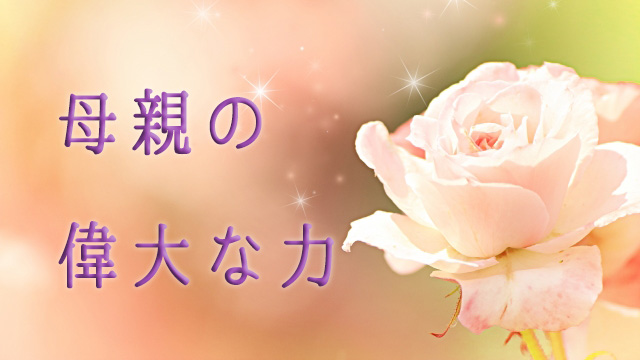

母親というものはどうしても子どもと一体化しやすい。母子関係は父親と決定的に違っていて、直接的な血のつながりの濃さ、いわば根源的な生命レベルで子どもと結びついているからだ。
その「想い」は理屈を超えている。
2年ほど前、たまたま私が仕事で海外に出張したとき、慣れない異国での交渉事に疲れ切ってホテルで休んでいると妻から電話があった。私の母が疲れた私の顔が見える（！）と心配しているという。もちろん母は日本に居て、認知症を患いまた骨折の治療で入院中だった。
妻によれば母は病室の白い壁を指さして「あそこにジュンが見える。疲れた顔だが大丈夫だろうか」と言ったという。認知症を患っているとはいえ、この我が子を想う母の千里眼（⁉）に私も妻も驚いたが特殊な例ではない。
子どもに何らかの「危機」が迫っているとき母親は直感的にそのことを察する能力がある。それがあるからこそ子どもは安全に育つのだろう。母親の子に対する共感力まさに恐るべし！
だが、この共感力（エンパシー）は強力であるがゆえにそのことを母親が自覚していないと厄介なことも起こり得る。それが冒頭にあげた「子との一体化」現象である。一体化が行き過ぎるとどうなるか。すなわちこの共感力を無自覚に野放しにするとどうなるのか。
子どもの痛みを自分の痛みとし、子どもの喜びを我が喜びとし子どもの興味関心もまた同じく我がモノとする。ここまでは良いとしても子どもの成功を自分の成功と見なし、子どもの失敗を自分の失敗と捉えて落胆してしまう。そうなると子どもと自分を別人格と分けて考えられず、子は自分の分身―アイデンティティの延長―と見なしていることになる。
もっと極端に言うと子どもを自分のアイデンティティそのものとしてしまう。
たとえば子どもの成績が良かったり、有名校に進学したとかスポーツなどで秀でたりすると自分も鼻が高くなったり逆に劣っていると自分が否定されたようにヘコんでしまったりする。
特に子どもが学齢期になると、母親はついつい我が子と他人を比べて密かに優劣を競いがちだ。その結果、いわゆる「優秀な子」をもつ母親の発言力が強まったり影響力が高まるという現象が起こる。
PTAやママ友の集まりでもそのようなエゴが見え隠れするときがある。子どもの優劣が何となく母親の序列化につながっている、やや見苦しい光景だ。
同一化の危険と必要性
子どもに夢を託す。子どもの喜びや成長を自分の喜びとする。これ自体は多かれ少なかれどの親もやっていることだし、むしろ親なら当然の心理状態といえる。
問題なのは、たとえば子どもの評価（成績など）を自分への評価と思い込んだり、子どもの失敗を自分の育て方の失敗とみなすこと。逆に子どもの成功を自分の手柄とカン違いして鼻高々になることだ。特に後者は恐ろしい錯覚だ。なぜなら子どもの人生を操れると思い込んでいるからだ。
子どもの人生を操作することで自らを満たす行為。これは自分の人生の充実を目指して子どもの人生を乗っ取ることを意味する。子どもは当然自分の人生を取り戻すための闘いを開始するだろう。
特に支配的なタイプの母親をもった子どもは「自分らしい人生を取り戻す」ことに生涯の大部分を費やすことがある。それが人生のテーマになってしまう。子の人生テーマは母親の影響力からの離脱つまり「母との闘い」になる。これは悲劇だ。実際世界中にある神話や太古から語り継がれる物語（英雄譚や冒険譚）の多くは巨大な力―怪物や権力者―と闘って自由を勝ち取るあるいは愛する人を救い出すのがテーマだが、この巨大な力（怪物、魔物）は母親のメタファー（暗喩）と言われる。
母親を怪物や魔物にたとえるのは申し訳ないが、心理学者のユングが母親の元型（人類共通の普遍的イメージ）を「グレートマザー」と称したように母性には聖なるものと同時に、我が子を飲み込む恐ろしい側面があることを忘れてはならない。
以上のことをふまえ、子どもと過度に一体化せず適切な距離を取って理性的に子どもと向き合うためにはどうすればよいのか。
いま私が言ったように「過度に一体化しないように」「適切な距離を取り」「理性的に子育てする」と決意すればよいのだろうか。それは残念ながら効果はない。こういうもっともらしい言葉をいくら頭でくり返しても無駄なのは私自信の経験からも明らかだ。
最初に言ったように母子関係は本能的（根源的）な血縁に基くものだから理性での理解を超えている。たとえあなたが「自分は他の母親のように盲目的ではない。私は理性的な人間だ」と思い込んでいたとしても、理性的にふるまっていると考えているだけだ。
時々このような「子どもの自主性を尊重する理性的で賢い母」を演ずる人を見かけるが、いざというときにメッキが剥がれることが多い。子どもが不登校になった。入試直前なのに成績が急降下した。そうなると途端にパニックになり騒ぎ出す。
だから母親が心がけるべきをあげるなら、まず第一に子どもと一体化して良いと認めること。子どもと共に泣き、子どもと共に笑い子どものことをアレコレ心配する。そんな自分でいても良いのだと自分に許すことだ。
自分の中に子と一体化している部分があり、それが子どもに対する共感につながっているのだと肯定的に認め許すこと。ここを出発点にする。つまり無自覚な一体化ではなく自覚的な一体化である。
共感的に聞くことの偉大さ
こうして自分が子どもを一体化していることを認めた上で、そこから生まれる共感力を努めて良い方向へ向けることが必要となる。
それは子どものためになる。子どもがいま何に興味関心があるのか。子どもはいま何に悩んでいるのか。子どもの内面にいま起こっていることは何なのかに注意を向けてみる。
子どもを探るのではない。子どもを思い通りに誘導するためでもない。ただ一緒に寄り添うためだけに感じてみることだ。ムリに何かを引き出すためではない。悩みがあるとしてそれを解決する必要もない。
たとえば子どもが友人関係で悩んでいたとする。そのときはまず、子の痛み悲しみ悔しさをただ感じてみる。母親であるあなたは偉大な能力―共感力―をもっている。子と一緒にいて、ただそれを共に感じてあげることはできるだろうか？そして「そんなときはこうすれば良いのじゃない」などと口を差しはさまずひたすら共感することはできるだろうか？子どもがたとえ友人の悪口を言ったとしても「そんなこと言うものじゃない」などと拒絶せず「そうなんだ。そう思ってるのね」と共感的に聞くことはできるだろうか？
つまり共感するということはお互いの心を開くカギであり、それによって子ども自身が自分を新たな観点から見つめ直すきっかけとなる。そうすれば子どもは自らを修復し何をすべきか自分で発見できる。そうして子は己の問題を解決していくだろう。
「ただ共感して聞いているだけで大丈夫なのか」と問うなら大丈夫だと答えたい。親はどうしても子どもに何かを教えようとする。気の利いたアドバイス、人生の先輩として生きる智恵（技術）を授けようとする。
だがそれは子どもが悩んだり試行錯誤するチャンスを奪っている。子どもは「悩む権利」「失敗する権利」をもっている。
悩むこと失敗することこそが人生の糧になるからだ。そのとき母親の共感力は大きな武器となる。子どもの心をオープンにし勇気をもたらす。それは自己解決能力を促し、自分の中にある資質に気づかせ自信と勇気につながるからだ。子どもの自己肯定力にとって母親の共感力は想像以上に役に立つのだ。
冒頭の話に戻る。私が海外のホテルで疲れ切ってベッドに横たわっていたときの話だ。認知症で物事の判断力を失いながらも、母はその共感力を発揮して息子の「危機」を察知した。その気づかいは確かに私を癒し失われた活力の回復に一役買った。判断力や身体の自由を失ってもなお何千キロも離れた息子の「いま」に寄り添い共感し励まそうとする。まさに母親の愛は時空を超えている。
これこそが母親の共感力（愛）の偉大さではないだろうか。